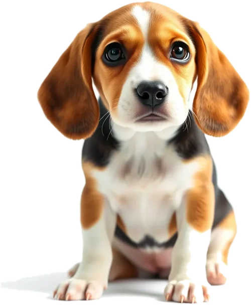

Ежедневно 10:00–22:00
«Усатый Полосатый»: лечим хвостатых
Ветеринарная клиника в Остафьево и Дрожжино. Используем современные методы диагностики, профилактики и лечения животных.

Современное оборудование
Используем передовые технологии для диагностики и лечения.
Хирургия
Операции от кастрации до кесарева сечения.
Опытные врачи
Ветеринары с большим опытом постоянно повышают квалификацию.
Стоматология
Ультразвуковая чистка зубов под наркозом и удаление зубов.
Дневной стационар
Дневной стационар, внутривенная инфузионная терапия, кислородная терапия.
Вызов врача на дом
Врач приедет к вам домой.
Направления
Консультации и диагностикаПриём экзотических животныхОнлайн-консультацияВакцинацияХирургияСтоматологияСтационар и терапияПроцедуры и манипуляцииОфтальмологияГруминг и гигиенаУЗИЭКГОтоскопияГастроскопияЧипированиеОформление ветпаспортаВызов врача на дом
Первичный прием/осмотр
750 ₽
Комплексная вакцинация собак
3 140 ₽
Кастрация кота
8 250 ₽
Как нас найти
- АдресМосква, Новомосковский административный округ, район Щербинка, Остафьевское шоссе, 14, корп. 2
- Телефоны+7 (495) 741-82-52
+7 (999) 834-92-92 - Почтаgnk_67@mail.ru
- Режим работыЕжедневно, с 10:00 до 22:00
Запишитесь на приём
Москва, Новомосковский административный округ, район Щербинка, Остафьевское шоссе, 14, корп. 2